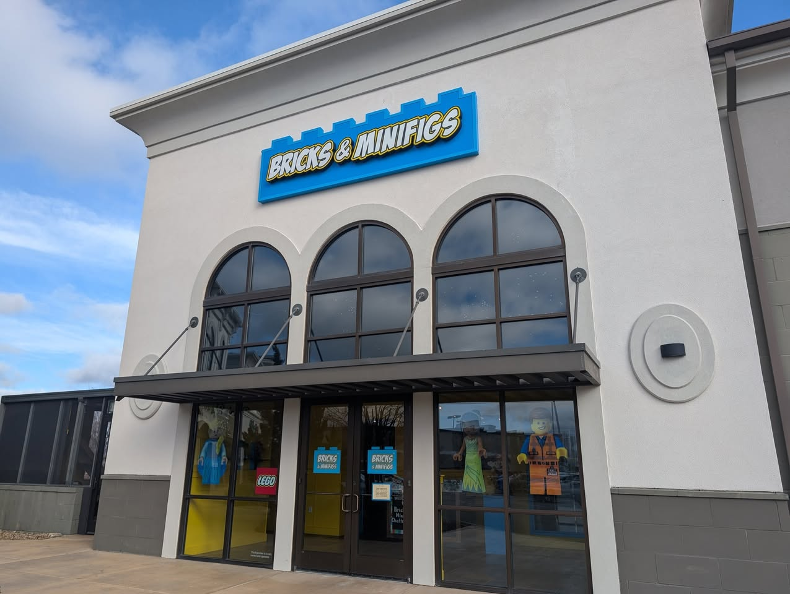

Lego Community & Events
Join fellow enthusiasts to learn about upcoming events, share your Lego projects, and celebrate the creative world of Lego. From online forums to in-person conventions, there are countless ways to connect with the Lego community.
Upcoming Lego Events
- BrickUniverse Monterey, CA (Fan Expo 2025)
-
BrickWorld Chicago - June 15-17, 2025 - Chicago, IL

Local LEGO Resellers Near Chattanooga, TN
Although there are no official LEGO stores in the area, several resellers specialize in buying, selling, and trading LEGO sets, both new and used. These stores offer a variety of LEGO products, including rare and retired sets, as well as trade-in options for LEGO enthusiasts.
Bricks & Minifigs
Bricks & Minifigs is a well-known LEGO reseller that buys, sells, and trades LEGO sets, minifigures, and bulk bricks. They offer a wide selection of both new and pre-owned LEGO products, including rare and hard-to-find sets.
Location: 2553 Lifestyle Way, Chattanooga, TN
Scenic Bricks
Located in Soddy-Daisy, TN, Scenic Bricks specializes in LEGO sales and trade-ins. They provide a variety of LEGO sets, including discontinued and collectible items, making it a great place for LEGO fans looking for unique pieces.
Location: 9217 Dayton Pike, Soddy Daisy, TN